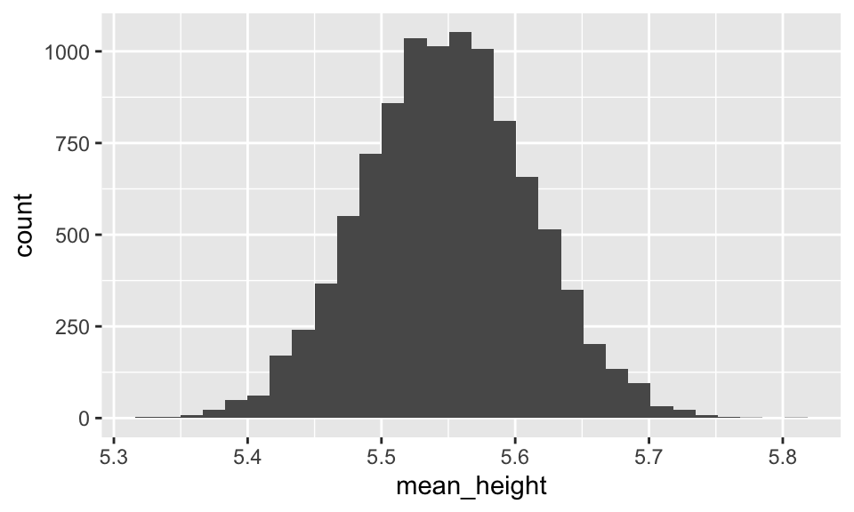
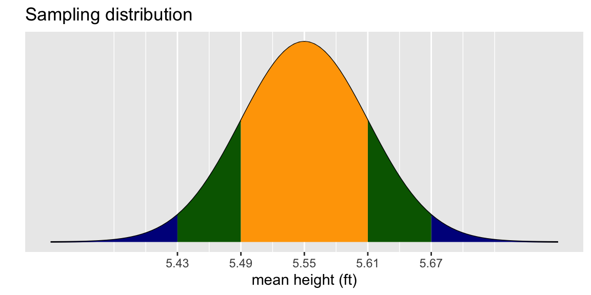

# run these every time you open Rstudio
library(tidyverse)
library(oibiostat)
library(ggridges)
library(janitor)
library(rstatix)
library(knitr)
library(gtsummary)
library(moderndive) # NEW!!
set.seed(456)Day 9: Confidence intervals (4.2)
BSTA 511/611
Week 6
Load packages
- Packages need to be loaded every time you restart R or render an Qmd file
- You can check whether a package has been loaded or not
- by looking at the Packages tab and
- seeing whether it has been checked off or not
Last time -> Goals for today
Day 8: Section 4.1
- Sampling from a population
- population parameters vs. point estimates
- sampling variation
- Sampling distribution of a mean
- Central Limit Theorem
Day 9: Section 4.2
What are Confidence Intervals?
- How to calculate CI’s?
- How to interpret & NOT interpret CI’s?
- What if we don’t know \(\sigma\)?
- Student’s t-distribution
Our hypothetical population: YRBSS
Youth Risk Behavior Surveillance System (YRBSS)
- Yearly survey conducted by the US Centers for Disease Control (CDC)
- Measures health-related activity in high-school aged youth
yrbsscontains responses from n = 13,583 participants in 2013 for a subset of the variables included in the complete survey data
library(oibiostat)
data("yrbss") #load the data
# ?yrbssdim(yrbss)[1] 13583 13names(yrbss) [1] "age" "gender"
[3] "grade" "hispanic"
[5] "race" "height"
[7] "weight" "helmet.12m"
[9] "text.while.driving.30d" "physically.active.7d"
[11] "hours.tv.per.school.day" "strength.training.7d"
[13] "school.night.hours.sleep"Transform height & weight from metric to to standard
Also, drop missing values and add a column of id values
yrbss2 <- yrbss %>% # save new dataset with new name
mutate( # add variables for
height.ft = 3.28084*height, # height in feet
weight.lb = 2.20462*weight # weight in pounds
) %>%
drop_na(height.ft, weight.lb) %>% # drop rows w/ missing height/weight values
mutate(id = 1:nrow(.)) %>% # add id column
select(id, height.ft, weight.lb) # restrict dataset to columns of interest
head(yrbss2) id height.ft weight.lb
1 1 5.675853 186.0038
2 2 5.249344 122.9957
3 3 4.921260 102.9998
4 4 5.150919 147.9961
5 5 5.413386 289.9957
6 6 6.167979 157.0130dim(yrbss2)[1] 12579 3# number of rows deleted that had missing values for height and/or weight:
nrow(yrbss) - nrow(yrbss2) [1] 1004yrbss2: stats for height in feet
summary(yrbss2) id height.ft weight.lb
Min. : 1 Min. :4.167 Min. : 66.01
1st Qu.: 3146 1st Qu.:5.249 1st Qu.:124.01
Median : 6290 Median :5.512 Median :142.00
Mean : 6290 Mean :5.549 Mean :149.71
3rd Qu.: 9434 3rd Qu.:5.840 3rd Qu.:167.99
Max. :12579 Max. :6.923 Max. :399.01 (mean_height.ft <- mean(yrbss2$height.ft))[1] 5.548691(sd_height.ft <- sd(yrbss2$height.ft))[1] 0.3434949Take 10,000 samples of size n = 30 from yrbss2
samp_n30_rep10000 <- yrbss2 %>%
rep_sample_n(size = 30,
reps = 10000,
replace = FALSE)
samp_n30_rep10000# A tibble: 300,000 × 4
# Groups: replicate [10,000]
replicate id height.ft weight.lb
<int> <int> <dbl> <dbl>
1 1 5869 5.15 145.
2 1 6694 5.41 127.
3 1 2517 5.74 130.
4 1 5372 6.07 180.
5 1 5403 6.07 163.
6 1 2329 6.07 182.
7 1 8863 5.25 125.
8 1 8058 5.84 135.
9 1 335 6.17 235.
10 1 4698 5.58 124.
# ℹ 299,990 more rowsmeans_hght_samp_n30_rep10000 <-
samp_n30_rep10000 %>%
group_by(replicate) %>%
summarise(mean_height =
mean(height.ft))
means_hght_samp_n30_rep10000# A tibble: 10,000 × 2
replicate mean_height
<int> <dbl>
1 1 5.59
2 2 5.59
3 3 5.51
4 4 5.65
5 5 5.64
6 6 5.57
7 7 5.61
8 8 5.60
9 9 5.52
10 10 5.64
# ℹ 9,990 more rowsSimulated sampling distribution for n = 30 using 10,000 sample mean heights
ggplot(
means_hght_samp_n30_rep10000,
aes(x = mean_height)) +
geom_histogram()
CLT tells us that we can model the sampling distribution of mean heights using a normal distribution.
mu <- 5.55
SE <- 0.34/sqrt(30)
sig <- round(SE, 2)
ggplot(data.frame(x = c(mu-4*sig, mu+4*sig)), aes(x = x)) +
stat_function(fun = dnorm,
args = list(mean = mu, sd = sig)) +
stat_function(fun = dnorm,
args = list(mean = mu, sd = sig),
xlim = c(mu-4*sig, mu-2*sig),
geom = "area", fill = "darkblue") +
stat_function(fun = dnorm,
args = list(mean = mu, sd = sig),
xlim = c(mu+2*sig, mu+4*sig),
geom = "area", fill = "darkblue") +
stat_function(fun = dnorm,
args = list(mean = mu, sd = sig),
xlim = c(mu-2*sig, mu-1*sig),
geom = "area", fill = "darkgreen") +
stat_function(fun = dnorm,
args = list(mean = mu, sd = sig),
xlim = c(mu+1*sig, mu+2*sig),
geom = "area", fill = "darkgreen")+
stat_function(fun = dnorm,
args = list(mean = mu, sd = sig),
xlim = c(mu-1*sig, mu+1*sig),
geom = "area", fill = "orange") +
scale_x_continuous(name ="mean height (ft)",
breaks=c(mu-2*sig,mu-1*sig,mu, mu+1*sig, mu+2*sig)) +
labs(title = "Sampling distribution", y = "") +
scale_y_continuous(labels = NULL, breaks = NULL)
Confidence interval (CI) for the mean \(\mu\)
\[\overline{x}\ \pm\ z^*\times \text{SE}\]
where
- \(SE = \frac{\sigma}{\sqrt{n}}\)
- \(z^*\) depends on the confidence level
- For a 95% CI, \(z^*\) is chosen such that 95% of the standard normal curve is between \(-z^*\) and \(z^*\)
qnorm(.975)[1] 1.959964qnorm(.995)[1] 2.575829When can this be applied?
Example: CI for mean height
- A random sample of 30 high schoolers has mean height 5.6 ft.
- Find the 95% confidence interval for the population mean, assuming that the population standard deviation is 0.34 ft.
How to interpret a CI?
Simulating Confidence Intervals: http://www.rossmanchance.com/applets/ConfSim.html
Actual interpretation:
- If we were to
- repeatedly take random samples from a population and
- calculate a 95% CI for each random sample,
- then we would expect 95% of our CI’s to contain the true population parameter \(\mu\).
What we typically write as “shorthand”:
- We are 95% confident that (the 95% confidence interval) captures the value of the population parameter.
WRONG interpretation:
- There is a 95% chance that (the 95% confidence interval) captures the value of the population parameter.
- For one CI on its own, it either does or doesn’t contain the population parameter with probability 0 or 1. We just don’t know which!
Interpretation of our heights CI
Correct interpretation:
- We are 95% confident that the mean height for high schoolers is between 5.43 and 5.67 feet.
WRONG:
- There is a 95% chance that the mean height for high schoolers is between 5.43 and 5.67 feet.
What if we don’t know \(\sigma\) ?
In real life, we don’t know what the population sd is ( \(\sigma\) )
If we replace \(\sigma\) with \(s\) in the SE formula, we add in additional variability to the SE! \[\frac{\sigma}{\sqrt{n}} ~~~~\textrm{vs.} ~~~~ \frac{s}{\sqrt{n}}\]
Thus when using \(s\) instead of \(\sigma\) when calculating the SE, we need a different probability distribution with thicker tails than the normal distribution.
- In practice this will mean using a different value than 1.96 when calculating the CI.
Student’s t-distribution
The Student’s t-distribution:
- Is bell shaped and symmetric with mean = 0.
- Its tails are a thicker than that of a normal distribution
- The “thickness” depends on its degrees of freedom: \(df = n–1\) , where n = sample size.
- As the degrees of freedom (sample size) increase,
- the tails are less thick, and
- the t-distribution is more like a normal distribution
- in theory, with an infinite sample size the t-distribution is a normal distribution.
Calculating the CI for the population mean using \(s\)
CI for \(\mu\):
\[\bar{x} \pm t^*\cdot\frac{s}{\sqrt{n}}\]
where \(t^*\) is determined by the t-distribution and dependent on the
df = \(n-1\) and the confidence level
qtgives the quartiles for a t-distribution. Need to specify- the percent under the curve to the left of the quartile
- the degrees of freedom = n-1
- Note in the R output to the right that \(t^*\) gets closer to 1.96 as the sample size increases.
qt(.975, df=9) # df = n-1[1] 2.262157qt(.975, df=49)[1] 2.009575qt(.975, df=99)[1] 1.984217qt(.975, df=999)[1] 1.962341Example: CI for mean height (revisited)
- A random sample of 30 high schoolers has mean height 5.6 ft and standard deviation 0.34 ft.
- Find the 95% confidence interval for the population mean.
\(z\) vs \(t\)??
(& important comment about Chapter 4 of textbook)
Textbook’s rule of thumb
- (Ch 4) If \(n \geq 30\) and population distribution not strongly skewed:
- Use normal distribution
- No matter if using \(\sigma\) or \(s\) for the \(SE\)
- If there is skew or some large outliers, then need \(n \geq 50\)
- (Ch 5) If \(n < 30\) and data approximately symmetric with no large outliers:
- Use Student’s t-distribution
BSTA 511 rule of thumb
- Use normal distribution ONLY if know \(\sigma\)
- If using \(s\) for the \(SE\), then use the Student’s t-distribution
For either case, can apply if either
- \(n \geq 30\) and population distribution not strongly skewed
- If there is skew or some large outliers, then \(n \geq 50\) gives better estimates
- \(n < 30\) and data approximately symmetric with no large outliers
If do not know population distribution, then check the distribution of the data.